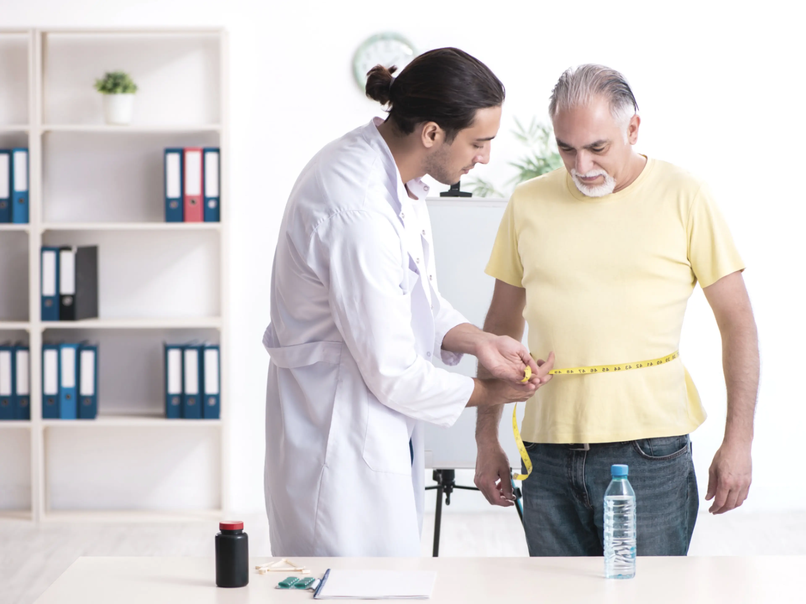
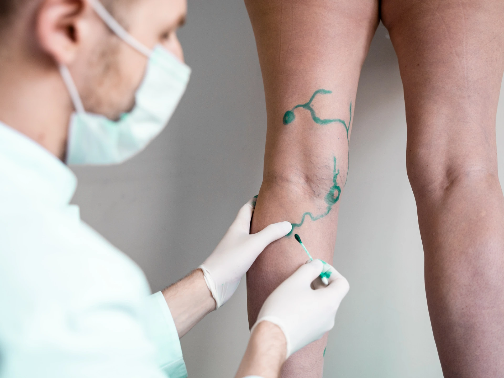
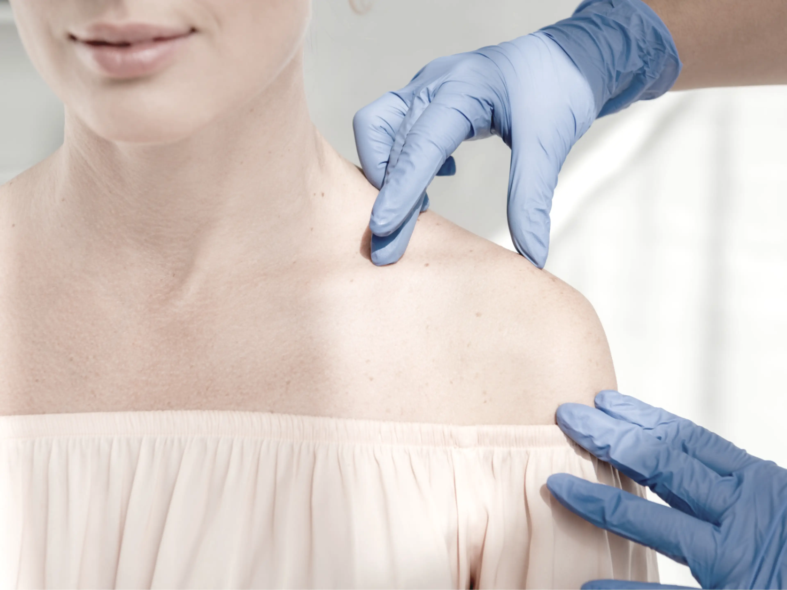
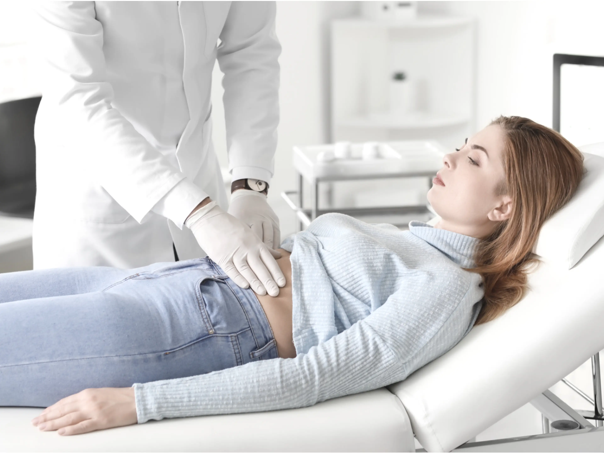
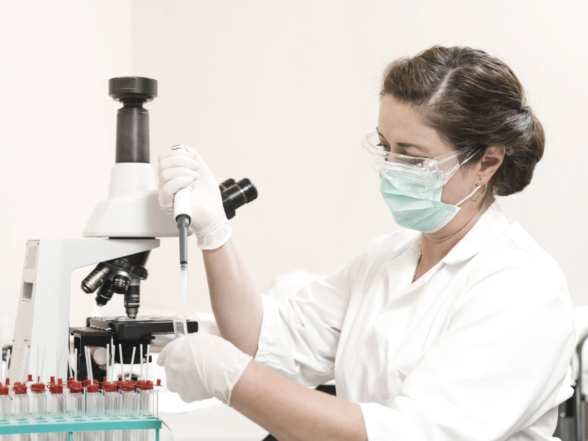
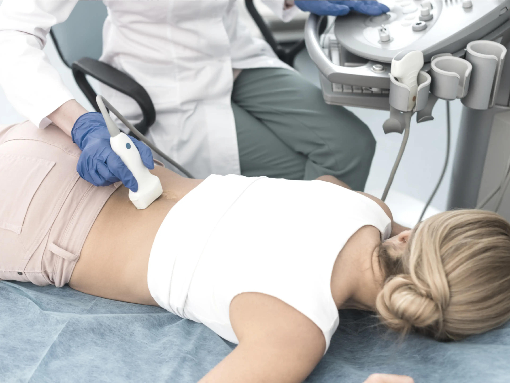
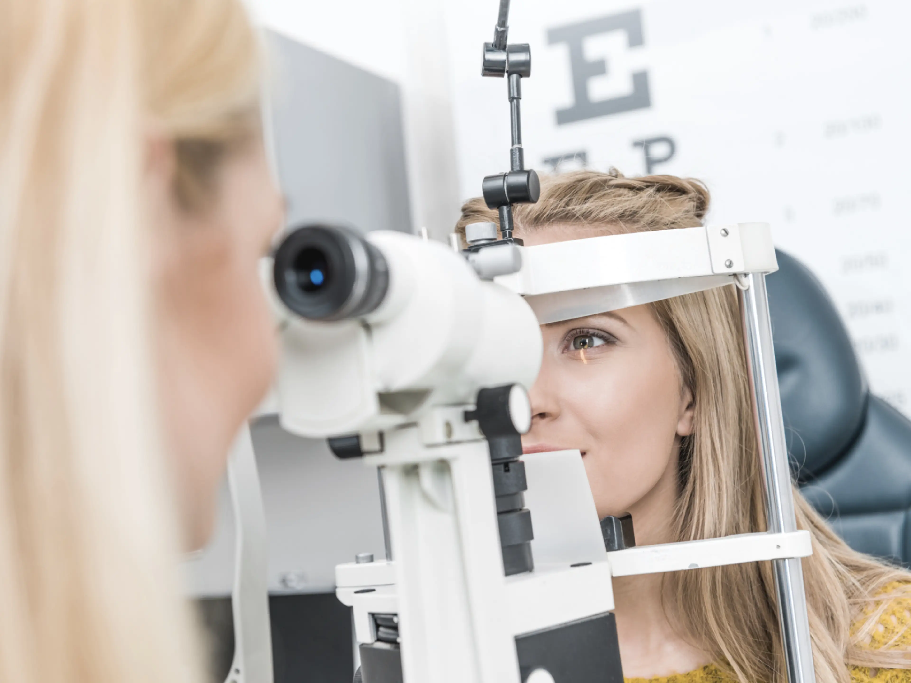
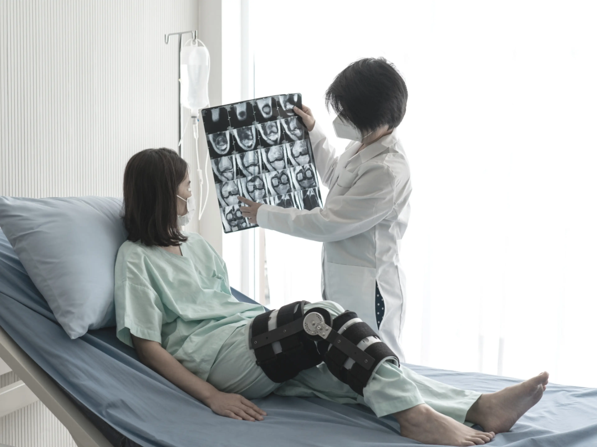
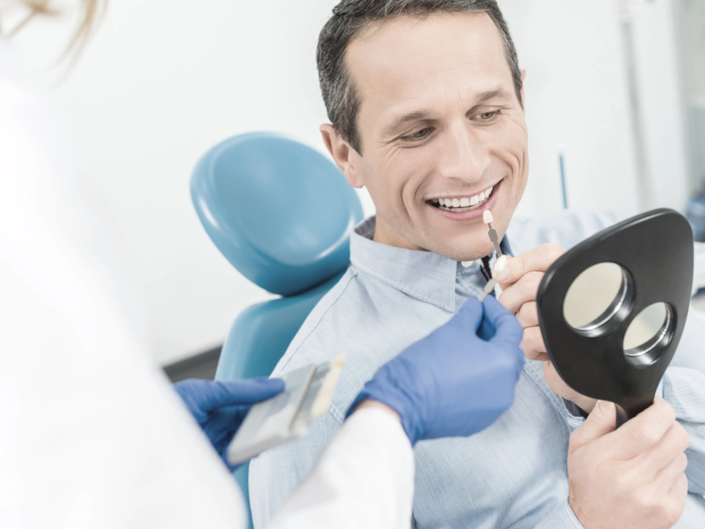

Pentru a veni în întâmpinarea pacienților, oferim acces la o gamă largă de specialități medicale, cu profesionalism, grijă și responsabilitate.
Îmbinăm serviciile medicale integrate cu profesionalismul, grija și responsabilitatea personalului medical. 24/24 suntem alături de tine.
Obține o imagine detaliată a stării tale de sănătate. Alege pachetele de analize și investigații concepute pentru a evalua principalele funcții ale organismului.
Întreabă despre cazul tău →Servicii complete pentru diagnosticarea și tratamentul afecțiunilor cardiovasculare, indiferent de vârstă, cu ajutorul experților în domeniu din Turcia.
Întreabă despre cazul tău →
Chirurgia bariatrică și metabolică îmbunătățește calitatea vieții și oferă rezultate imediate și pe termen lung: scădere în greutate durabilă și menținerea acesteia.
Întreabă despre cazul tău →Intervenții de înaltă calitate în chirurgia estetică, pornind de la injectare de botox și acid hialuronic până la chirurgia corectoare, implanturi mamare și lifting.
Întreabă despre cazul tău →Servicii realizate la standarde de calitate în Turcia privind efectuarea diferitelor tipuri de proceduri chirurgicale, pentru o gamă largă de probleme de sănătate.
Întreabă despre cazul tău →
Disciplină chirurgicală ce se ocupă de patologia arterelor, venelor și vaselor limfatice din întregul organism.
Întreabă despre cazul tău →
Soluții pentru tratarea în Turcia a afecțiunilor curente ale pielii, cât și tratamente specifice și complexe.
Întreabă despre cazul tău →Diagnostic și tratament pentru afecțiunile endocrine, la cele mai înalte standarde de tehnologie medicală.
Întreabă despre cazul tău →Servicii de asistență, îndrumare și monitorizare în domeniul inseminării artificiale, cu cea mai avansată și mai mare rată de succes.
Întreabă despre cazul tău →
Servicii de prevenție, diagnosticare și tratament pentru afecțiunile sistemului digestiv, de către specialiști de top din Turcia.
Întreabă despre cazul tău →
Asistență medicală și îndrumare către experții hematologi din spitalele din Turcia, pentru boli hematologice benigne sau maligne.
Întreabă despre cazul tău →
Specialiști de top în diagnosticarea și tratarea afecțiunilor renale, dializă sau transplant de rinichi.
Întreabă despre cazul tău →Servicii medicale de top în neurologie și neurochirurgie — specialități care tratează cele mai complexe afecțiuni, cu abordare multidisciplinară.
Întreabă despre cazul tău →Specialiști pentru sănătatea femeilor, în toate etapele de viață: controale de rutină, teste de screening și tratamentul bolilor aparatului genital.
Întreabă despre cazul tău →
Specialiști în oftalmologie și tratament de ultimă oră pentru diverse probleme oculare, în unitățile medicale din Turcia.
Întreabă despre cazul tău →Medicină preventivă, servicii de diagnostic și tratament pentru toate tipurile de cancer, cu tehnologii la standarde mondiale.
Întreabă despre cazul tău →Diagnostic și tratament modern pentru afecțiunile nasului, gâtului și urechilor, în unitățile medicale partenere din Turcia.
Întreabă despre cazul tău →
Asistență medicală de înaltă calitate pentru afecțiuni ortopedice, în clinici de renume din Turcia, cu specializări în ortopedie și traumatologie.
Întreabă despre cazul tău →Diagnostic și tratament de ultimă generație pentru afecțiunile pulmonare, cu aparatură ultramodernă.
Întreabă despre cazul tău →Servicii pentru înlăturarea durerilor și recăpătarea stării de bine a întregului organism, prin recuperare medicală și medicină sportivă.
Întreabă despre cazul tău →Acces la transplant de țesuturi și/sau organe și monitorizarea stării de sănătate a pacienților, înainte și după operație.
Întreabă despre cazul tău →Diagnostic și tratament pentru afecțiunile urologice, cu personal cu experiență internațională.
Întreabă despre cazul tău →
Servicii integrate de stomatologie: implantologie, chirurgie dentară, protetică, estetică dentară (Hollywood smile, coroane Emax, fațete), ortodonție și profilaxie.
Întreabă despre cazul tău →Contactează-ne direct sau completează formularul online — primești gratuit opinia medicală și costul estimat, direct de la specialiștii din Istanbul.